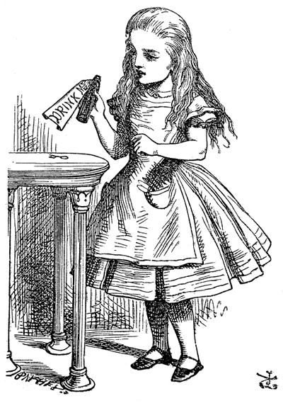

« De plus très-curieux en plus très-curieux ! » s’écria Alice (sa surprise était si grande qu’elle ne pouvait s’exprimer correctement) : « Voilà que je m’allonge comme le plus grand télescope qui fût jamais ! Adieu mes pieds ! » (Elle venait de baisser les yeux, et ses pieds lui semblaient s’éloigner à perte de vue.) « Oh ! mes pauvres petits pieds ! Qui vous mettra vos bas et vos souliers maintenant, mes mignons ? Quant à moi, je ne le pourrai certainement pas ! Je serai bien trop loin pour m’occuper de vous : arrangez-vous du mieux que vous pourrez. — Il faut cependant que je sois bonne pour eux, » pensa Alice, « sans cela ils refuseront peut-être d’aller du côté que je voudrai. Ah ! je sais ce que je ferai : je leur donnerai une belle paire de bottines à Noël. »
Puis elle chercha dans son esprit comment elle s’y prendrait. « Il faudra les envoyer par le messager, » pensa-t-elle ; « quelle étrange chose d’envoyer des présents à ses pieds ! Et l’adresse donc ! C’est cela qui sera drôle.
Oh ! que d’enfantillages je dis là ! »
Au même instant, sa tête heurta contre le plafond de la salle : c’est qu’elle avait alors un peu plus de neuf pieds de haut. Vite elle saisit la petite clef d’or et courut à la porte du jardin.
Pauvre Alice ! C’est tout ce qu’elle put faire, après s’être étendue de tout son long sur le côté, que de regarder du coin de l’œil dans le jardin. Quant à traverser le passage, il n’y fallait plus songer. Elle s’assit donc, et se remit à pleurer.